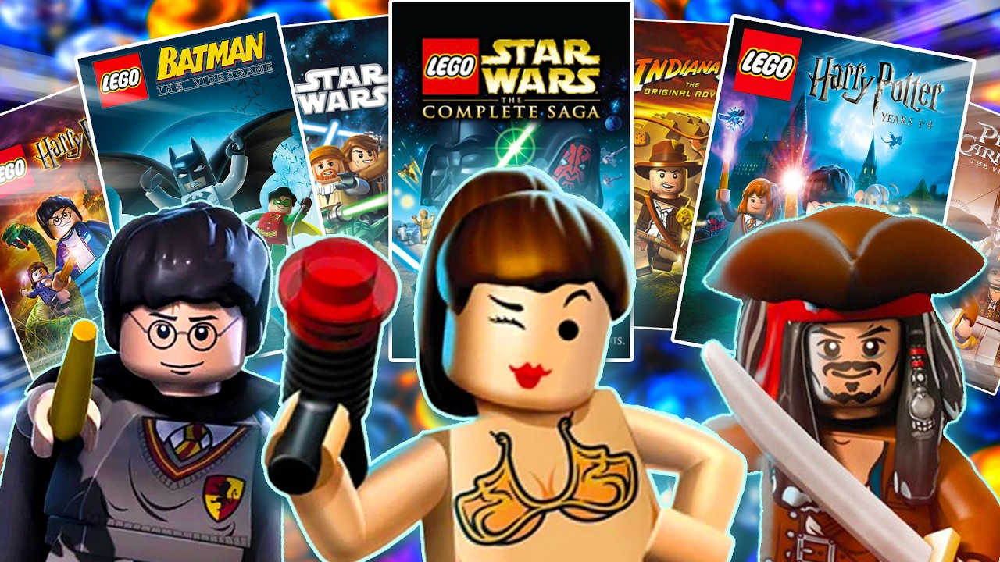

Apresentação

Imagem de capa do vídeo do youtuber Casual PerspectiveAqui nesse site falaremos sobre os jogos de LEGO, que são, em sua totalidade, simples, divertidos e muito conhecidos por misturar aventuras com humor =D Eles ficam legais para jogar sozinho ou ainda melhores com um amigo.
Os jogos escolhidos aqui mostram como um tema simples pode virar uma experiencia divertida e fácil de entender, atingindo jogadores de todas as idades. Se voce gosta de jogos que são leves e tem um toque de humor, os jogos de LEGO são uma otima escolha.
Caracteristicas principais
- Personagens feitos de blocos de LEGO (é claro!)
- Fases inspiradas em filmes, séries e universos conhecidos
- Jogabilidade facil e intuitiva
- Humor leve durante a aventura
- Modo cooperativo para jogar com amigos
- Os jogos costumam ter personagens variados, as vezes com mais de 150 personagens!
Trilhas sonoras CLÁSSICAS
Se quiser, dá para ouvir algumas das músicas mais famosas e apreciadas pelos fãs das franquias (como eu)! Aqui estao três players simples para cada jogo.
LEGO Senhor dos Anéis
LEGO Marvel Super Heroes
LEGO Star Wars III: The Clone Wars